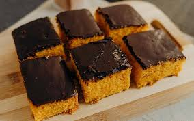
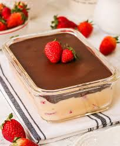
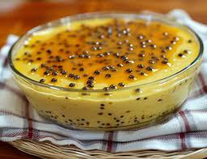

1. Bolo de Cenoura:
Ingredientes (8 porções):
Massa:
- 1/2 xícara (chá) de óleo
- 3 cenouras médias raladas
- 4 ovos
- 2 xícaras (chá) de açúcar
- 2 e 1/2 xícaras (chá) de farinha de trigo
- 1 colher (sopa) de fermento em pó
Cobertura:
- 1 colher (sopa) de manteiga
- 3 colheres (sopa) de chocolate em pó
- 1 xícara (chá) de açúcar
- 1 xícara (chá) de leite
(Modo de preparo : 40min)
- Em um liquidificador, adicione a cenoura, os ovos e o óleo, depois misture.
- Acrescente o açúcar e bata novamente por 5 minutos.
- Em uma tigela ou na batedeira, adicione a farinha de trigo e depois misture novamente.
- Acrescente o fermento e misture lentamente com uma colher.
- Asse em um forno preaquecido a 180° C por aproximadamente 40 minutos.
Cobertura:
- Despeje em uma tigela a manteiga, o chocolate em pó, o açúcar e o leite, depois misture.
- Leve a mistura ao fogo e continue misturando até obter uma consistência cremosa, depois despeje a calda por cima do bolo.
- Em uma tigela ou na batedeira, adicione a farinha de trigo e depois misture novamente.
2. Bombom de travessa:
Ingredientes (10 porções)
- 250 g de chocolate ao leite
- 250 g de chocolate meio amargo
- 2 latas de leite condensado
- 2 latas de creme de leite
- 2 colheres de margarina
- 2 caixas de morango
(Modo de preparo : 35min)
- Coloque as latas de leite condensado em uma panela com a manteiga e faça uma massa como um brigadeiro mole.
- Coloque em uma travessa e, por cima deste brigadeiro mole, coloque os morangos cortados ao meio.
- Reserve para fazer a cobertura
- Para fazer a cobertura, rale o chocolate ao leite e o meio amargo e misture ao creme de leite.
- Retire e mexa
- Coloque de novo no micro-ondas por mais 1 minuto.
- Despeje a cobertura por cima dos morangos e leve à geladeira coberta por papel-filme.
3. Mousse de maracujá:
Ingredientes (6 porções)
- 1 lata de leite condensado
- 1 lata de suco de maracujá (medida pela lata de leite condensado)
- 1 lata de creme de leite sem soro
(Modo de preparo : 5min) e (Espera de 4h)
- Em um liquidificador, bata o creme de leite, o leite condensado e o suco concentrado de maracujá.
- Em uma tigela, despeje a mistura e leve à geladeira por, no mínimo, 4 horas.